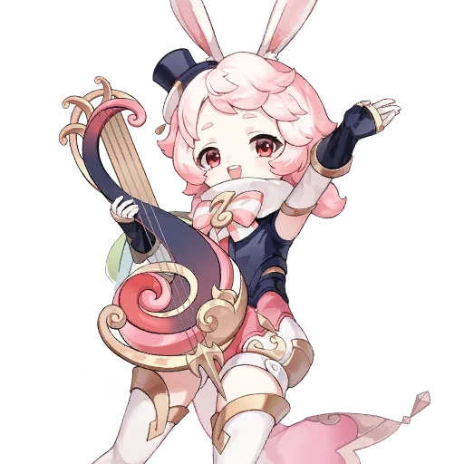
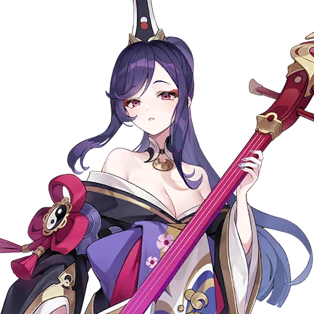
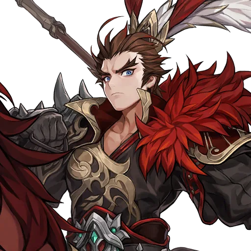
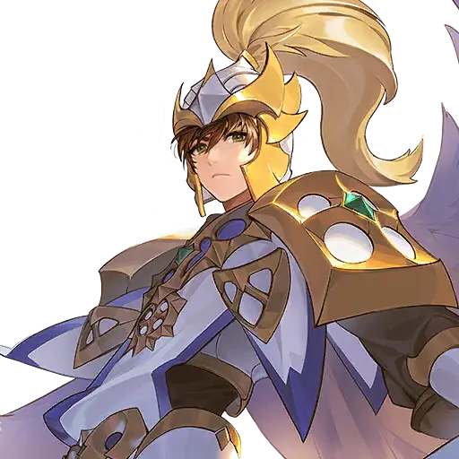
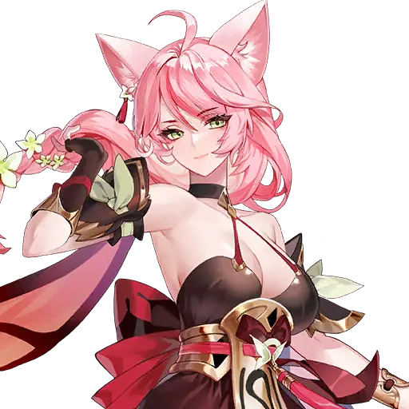
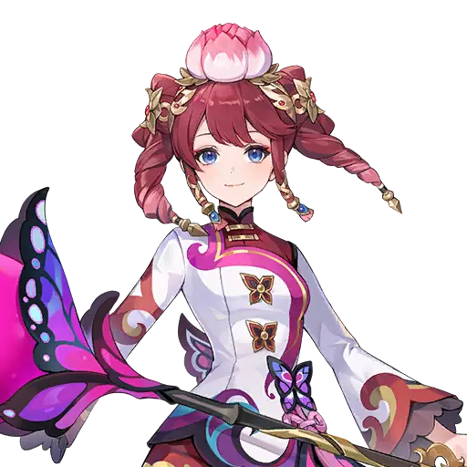
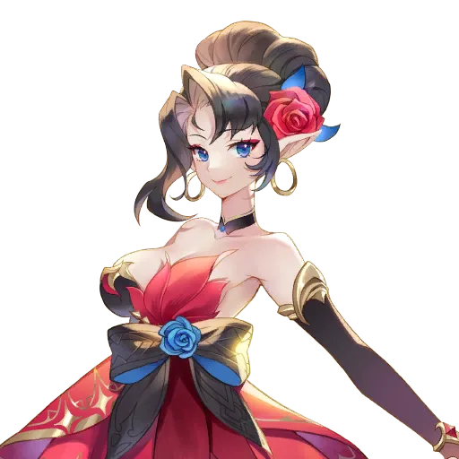

🧭 Vì sao đội có Hero mạnh vẫn vượt màn kém hiệu quả?
Một đội toàn Hero gây sát thương mạnh vẫn có thể thua một màn mà đội yếu hơn lại qua được. Lý do là sức mạnh của đội không nằm ở từng Hero riêng lẻ, mà nằm ở cách 5 yếu tố sau kết hợp với nhau:
| Yếu tố | Vai trò | Thiếu thì sao? |
|---|---|---|
| Hero | 5 Hero trong đội, mỗi người một vai trò. | Thiếu Tank hoặc thiếu hồi máu thì đội sụp rất nhanh. |
| Pet | Đi kèm đội, tăng chỉ số hoặc hỗ trợ thêm. | Pet yếu không làm đội thua ngay, nhưng đội đủ mạnh sẽ thiếu một phần chỉ số. |
| Formation (trận hình) | Quyết định Hero nào đứng hàng trước, hàng sau và nhận bonus chỉ số nào. | Sai trận hình thì DPS đứng chỗ dễ chết, Tank lại đứng chỗ không ai đánh. |
| Skill Queue (thứ tự kỹ năng) | Thứ tự kỹ năng được dùng khi vào trận. | Không đặt thì game tự dùng lung tung: sát thương dùng trước khi kịp buff, khống chế dùng sau khi địch đã ra đòn. |
| Equipment | Trang bị tăng chỉ số theo từng Hero. | Hero mạnh mà trang bị sai hệ thì vẫn yếu hơn Hero vừa mà trang bị đúng. |
5 Hero gây sát thương, không Tank, không hồi máu
Đòn đầu rất mạnh, nhưng Boss chỉ cần một đợt phản công là từng Hero ngã xuống vì không ai đỡ đòn và không ai hồi máu. Thua không phải do thiếu sát thương.
1 Tank + 1 Support + 3 DPS
Sát thương mỗi đòn thấp hơn một chút, nhưng Tank giữ được đội sống qua nhiều lượt, Support hồi máu và tăng sát thương cho DPS. Tổng sát thương cả trận cao hơn và vượt màn ổn định hơn.
Bài này đi theo đúng thứ tự trên: chọn vai trò trước, xếp hàng, chọn trận hình, đặt thứ tự kỹ năng, rồi mới nhắc tới Pet và Equipment ở cuối. Nếu bạn đang kẹt ở một màn, hãy đọc mục 08 trước — có thể lỗi của bạn nằm ngay trong danh sách đó.
⚖️ Cân bằng Damage Dealer, Support và Tank
Mỗi Hero thuộc một trong năm hệ (Type), xem bằng biểu tượng cạnh sao Rank của Hero, hoặc lọc theo hệ ngay trên màn hình xếp đội. Hệ quyết định Hero đó sinh ra để làm gì — và đứng ở đâu.



| Hệ (Type) | Đặc điểm | Số lượng gợi ý | Ví dụ người mới thường có |
|---|---|---|---|
| Attack | Sát thương vật lý cao, máu và Defense thấp. | 0–3 Hero | Teo, Shane, Lu Bu |
| Magic | Sát thương phép cao, máu và Defense thấp. | 0–3 Hero | Freyja, Yoongun, Dongyoung |
| Defense | Máu và Defense cao, sát thương thấp. Tank của đội. | 1 Hero | Evan, Rudy |
| Support | Hồi máu, tạo Barrier, buff hoặc gỡ debuff; máu và Defense khá, sát thương thấp. | 1 Hero | Yui, Lina, Biscuit |
| Universal | Cân bằng giữa tấn công và phòng thủ, tùy cách dùng. | 0–3 Hero | Rachel, Eileene, Gelidus |
Khung cơ bản cho người mới là 1 Defense + 1 Support, còn lại là DPS và Universal tùy nội dung. Support trong đội có thể là Healer (Yui, Lina) hoặc Buffer/Debuffer (Biscuit tăng sát thương lên Boss, Rachel giảm DEF địch) — quan trọng là đội có người lo phần sống còn và phần tăng sát thương, không phải cứ có Healer mới gọi là đủ Support.
Đừng xếp 2 Tank trong đội thường. Một Tank đủ cứng đã giữ được đội; Tank thứ hai chiếm mất một ô DPS mà không làm đội sống lâu hơn bao nhiêu. Ô đó nên dành cho Support thứ hai hoặc DPS tùy nội dung — ví dụ đội Raid cần thêm Healer thì lấy Lina, đội Adventure cần thêm DPS diện rộng thì lấy Freyja.
Chọn DPS theo đội, không chọn theo từng Hero
Đội Physical và đội Magic cần DPS khác nhau, vì buff trong đội chỉ tăng một loại sát thương. Eileene tăng Physical Attack cho cả đội thì hợp với Teo, Shane, Lu Bu; Yoongun và Freyja là Magic thì cần buff Magic Attack. Lu Bu còn có nội tại giảm 90% Magic Attack của đồng đội — đặt Lu Bu vào đội Magic là tự làm yếu cả đội, dù Lu Bu rất mạnh khi đứng trong đội Physical. Xem kỹ đội mình đang chơi hệ gì trước khi thêm một DPS mới vào.
🛡️ Hàng trước – hàng sau: ai đứng đâu và vì sao?
Trong mỗi trận hình, đội chia thành hàng trước (Front Row) và hàng sau (Back Row). Quy tắc quan trọng nhất: Hero ở hàng trước dễ bị địch đánh trúng hơn. Vì vậy hàng trước là chỗ của những Hero chịu đòn được, hàng sau là chỗ của những Hero cần được bảo vệ để gây sát thương.
| Hệ (Type) | Vị trí gợi ý | Lý do |
|---|---|---|
| Attack | Hàng sau | Sát thương cao nhưng máu và Defense thấp; đứng trước sẽ ngã trước khi kịp gây sát thương. |
| Magic | Hàng sau | Giống Attack: cần sống đủ lâu để tung kỹ năng diện rộng. |
| Defense | Hàng trước | Máu và Defense cao, sinh ra để hứng đòn thay cho cả đội. |
| Support | Hàng trước hoặc hàng sau | Support có Defense khá nên đứng trước được; nhưng nếu Support là Healer duy nhất của đội, đặt ở hàng sau để còn sống mà hồi máu. |
| Universal | Tùy đội đang thiếu | Đội thiếu người chịu đòn thì Universal đứng trước; đội đã đủ Tank thì Universal đứng sau để gây sát thương. |
Một số kỹ năng chỉ tác dụng theo hàng — xếp sai là mất hiệu ứng
Không phải kỹ năng nào cũng tác dụng lên toàn bộ đội hoặc toàn bộ địch. Có kỹ năng chỉ chọn mục tiêu ở một hàng nhất định, nên vị trí đứng có thể làm mất hoặc giữ được hiệu ứng:
- Lina — kỹ năng 2: ở dạng gốc chỉ giảm DEF của địch ở hàng trước; chỉ khi đạt Transcendence 6 mới giảm DEF toàn bộ địch. Nếu Boss đứng hàng sau mà bạn trông chờ Lina giảm DEF của nó thì sẽ không có tác dụng.
- Sunran — kỹ năng 1 và 2: ưu tiên đánh địch ở hàng sau trước. Đặt Sunran vào đội để xử lý DPS hàng sau của địch trong Arena.
- Lu Bu — Transcendence 6: kỹ năng hồi máu cho chính Lu Bu và 1 đồng minh ở hàng sau. Muốn DPS hàng sau của bạn được hồi máu thì DPS đó phải đứng hàng sau — nghe hiển nhiên, nhưng nhiều người xếp Lu Bu chung đội rồi lại để DPS ở hàng trước.
- Rudy — nội tại: sau khi Rudy chịu đủ 3 đòn, đồng đội ở hàng trước được giảm sát thương nhận vào. Hiệu ứng Link của Rudy thì chia sẻ sát thương cho cả đội, không phân biệt hàng. Vì vậy đội có Rudy thường xếp nhiều Hero ở hàng trước cùng Rudy — đừng tách đồng đội ra hàng sau chỉ để "bảo vệ" họ, vì làm vậy họ lại mất đúng hiệu ứng giảm sát thương này.




Hàng sau không phải là "an toàn tuyệt đối". Địch vẫn có kỹ năng đánh toàn bộ đội hoặc ưu tiên hàng sau (như Sunran), và Boss Raid thường đánh diện rộng. Hàng sau chỉ giúp DPS ít bị đánh trúng bởi đòn thường và kỹ năng đơn mục tiêu — vẫn cần Tank và Healer để đội sống sót.
🗺️ Bốn trận hình: chọn mẫu nào, bonus ra sao?
Trận hình mở sau khi qua Adventure 1-10. Có 4 trận hình, mỗi trận hình chia 5 Hero thành hàng trước và hàng sau theo một mẫu cố định, và cho bonus chỉ số khác nhau cho từng hàng. Bonus tăng theo cấp trận hình — và bonus tính theo mẫu trận hình bạn đã chọn, không tính theo số Hero thực tế đang đứng ở mỗi hàng. Ví dụ: chọn trận hình Attack thì chỉ có 1 Hero đứng hàng trước, nhưng bonus Defense của hàng trước vẫn là mức của mẫu Attack, không đổi vì bạn chỉ đặt 1 Hero ở đó.
| Trận hình | Hàng trước – hàng sau | Bonus ở cấp tối đa | Dùng khi nào? |
|---|---|---|---|
| Basic | 2 trước – 3 sau | Hàng trước DEF +20% Hàng sau ATK +15% | Mới chơi, đội chưa có Tank thật cứng. Đặt được 3 DPS ở hàng sau, dễ dùng nhất giai đoạn đầu. |
| Balanced | 3 trước – 2 sau | Hàng trước DEF +15% Hàng sau ATK +20% | Muốn chia đều sát thương địch ra 3 Hero hàng trước, hoặc khi đã có một DPS rất mạnh cần thêm ATK. |
| Attack | 1 trước – 4 sau | Hàng trước DEF +40% Hàng sau ATK +10% | Có một Tank thật cứng đứng một mình hàng trước, muốn dồn tối đa sát thương cho 4 Hero hàng sau. |
| Defense (trong game: Protective) | 4 trước – 1 sau | Hàng trước DEF +10% Hàng sau ATK +40% | Muốn một DPS duy nhất ở hàng sau được tăng sát thương tối đa, 4 Hero hàng trước chia nhau chịu đòn. Hợp với Castle Rush nhất, Boss khó và khi luyện Fodder. |
Nâng cấp trận hình bằng Gold
Mở màn hình đội ở Adventure, Arena hoặc các nội dung khác, bấm biểu tượng Formation ở góc trên phải để mở màn hình chọn trận hình, rồi dùng Gold để nâng cấp từng trận hình. Mỗi lần Adventurer Skill (cấp người chơi) tăng 1 qua tiến độ Adventure, giới hạn cấp trận hình cũng tăng 1; cấp trận hình tối đa là 40. Số liệu trong bảng trên là ở cấp tối đa — ở cấp thấp, bonus nhỏ hơn nhiều, ví dụ trận hình Defense ở cấp 1 chỉ tăng 10,8% All Attack cho hàng sau và 2,7% Defense cho hàng trước.
Basic rồi Balanced
Hai trận hình này dễ dùng nhất khi đội chưa đủ Tank cứng và chưa có DPS vượt trội. Nâng đều cả hai theo tiến độ chơi, đừng dồn Gold vào một trận hình quá sớm.
Attack và Defense
Khi đã có Tank đủ cứng để đứng một mình (Attack) hoặc một DPS đủ mạnh để gánh cả đội (Defense), hai trận hình này cho hiệu quả cao hơn hẳn. Chọn theo nội dung đang đánh, không chọn cố định một trận hình cho mọi màn.
Mẹo khi luyện cấp bằng Repeat Battle: dùng trận hình Defense, đặt DPS mạnh nhất ở hàng sau và 4 ô hàng trước cho các Hero cần luyện cấp. Vừa vượt màn ổn định, vừa luyện được 4 Hero cùng lúc — đây là cách luyện Fodder hiệu quả nhất, không chỉ là trận hình "thủ".
👥 Đội mẫu cho người mới — xem và làm theo
Các đội dưới đây là đội mẫu dành cho người mới trong các guide Raid, Adventure và Arena — mỗi đội ghi rõ trận hình, vị trí từng Hero và vì sao Hero đó có mặt. Ô ghi "hoặc" là vị trí có thể thay bằng Hero khác cùng vai trò. Nếu chưa có Hero nào đó, hãy thay ô linh hoạt bằng Tank hoặc Healer rồi đánh lại khi đội đã cứng hơn — đừng cố dùng đúng đội mẫu khi đội mình chưa đủ người.
Đội Adventure — trận hình Defense (4 trước – 1 sau)
| Hàng trước | Hàng sau |
|---|---|
| Evan — Tank Yui — Healer Lina hoặc Rachel — Buffer/Debuffer (ô linh hoạt) Ace — Debuffer, giảm DEF địch | Freyja — DPS chính diện rộng (hoặc Teo / Lu Bu / Kyle) |
Đội Adventure cần ít nhất 1 DPS diện rộng và 1 Hero giảm DEF địch (Ace). Lina làm được nhiều việc cùng lúc — hồi máu, buff, tạo Barrier — nên là ô linh hoạt tốt; Rachel thay được Lina ở ô này. Freyja nhận miễn phí qua tutorial nên là DPS dễ có nhất; Teo, Lu Bu hoặc Kyle đều thay được nếu bạn đã có. Càng lên màn cao, địch càng dùng nhiều khống chế — lúc đó thay một ô bằng Hero có miễn nhiễm phù hợp với màn đó.
Đội Raid Destroyer Gaze — trận hình Defense (4 trước – 1 sau)
| Hàng trước | Hàng sau |
|---|---|
| Evan — Tank, Stun Immunity Yui — Healer, Burn Immunity Rachel — Debuffer Biscuit — Buff/Debuff (ô linh hoạt) | Shane — DPS chính, sát thương đơn mục tiêu |


Boss Destroyer Gaze gây Stun và Burn nên bắt buộc phải có miễn nhiễm cả hai: Evan chống Stun, Yui chống Burn (đồng thời hồi máu và hồi sinh). Shane là DPS đơn mục tiêu hệ vật lý tốt nhất cho Boss này vì sát thương tăng theo số debuff trên Boss — đi cùng Rachel rất hợp. Biscuit tăng sát thương lên Boss cho đồng đội có Attack cao nhất; nếu đội hay thua thì thay ô Biscuit bằng Tank hoặc Healer. Lưu ý: đừng thay Yui bằng Lina — Lina không có miễn nhiễm Burn, đội sẽ bị Burn liên tục.
Đội Raid Ox King — trận hình Defense (4 trước – 1 sau)
| Hàng trước | Hàng sau |
|---|---|
| Daisy hoặc Black Rose — Petrify Immunity + Buff Removal Karon hoặc Lee Joohee — Bleed Immunity + Heal Lina hoặc Yui — Heal + Buff sát thương Biscuit hoặc Evan — Buff sát thương / Tank | Espada hoặc Snipper — DPS chính |



Boss Ox King gây Bleed và Petrify nên cần miễn nhiễm cả hai. Ngay lượt đầu Boss gọi 4 Kotan có Damage Resistance, làm sát thương lên Boss gần như không vào — phải diệt Kotan bằng Buff Removal của Daisy hoặc Black Rose trước, rồi mới đánh Boss. Ox King có 0 DEF nên đừng mang Hero giảm DEF — phí một ô. Espada và Snipper là DPS tốt nhất vì sát thương theo máu tối đa của mục tiêu và mạnh hơn sau khi diệt đủ 4 địch. Nếu DPS diện rộng của bạn không diệt kịp Kotan thì đổi sang trận hình Balanced để thêm sát thương diện rộng.
Đội Raid Iron Devourer — trận hình Defense (4 trước – 1 sau)
| Hàng trước | Hàng sau |
|---|---|
| Xiao Qiao — Paralysis Immunity + Buff/Debuff Lucy — Poison Immunity + Heal + Gỡ debuff Asura — Focus Target Lina hoặc Melia — Heal + Buff/Debuff | Pascal — DPS chính (hoặc Yuri) |



Boss Iron Devourer gây Paralysis và Poison nên bắt buộc phải có miễn nhiễm cả hai: Xiao Qiao chống Paralysis, Lucy là Hero duy nhất chống Poison. Boss miễn nhiễm sát thương vật lý nên chỉ dùng DPS phép — Pascal là DPS phép đơn mục tiêu xuyên DEF, nhận miễn phí qua Adventurer's Path nên là lựa chọn dễ có nhất. Cần thêm Focus Target (Asura) hoặc tăng Weakness Hit Chance (Biscuit, Rachel) để đòn đánh trúng Boss. Nếu chưa có Xiao Qiao thì dùng Victoria thay để chống Paralysis; nếu chưa có cả Xiao Qiao lẫn Pascal thì tạm đánh Destroyer Gaze và Ox King trước, đừng cố Iron Devourer.
Đội Arena cho người mới — trận hình Defense (4 trước – 1 sau)
| Hàng trước | Hàng sau |
|---|---|
| Ace — DPS Evan — Tank Rachel — DPS hỗ trợ Ariel — Support | Karin — Hồi sinh |


Đội này toàn Hero miễn phí nhận được từ đầu game, hợp để leo những hạng Arena đầu mà không cần Summon. Cân bằng giữa sống sót, hồi máu và sát thương: Evan Tank, Karin hồi sinh ở hàng sau, Rachel vừa gây sát thương vừa giảm DEF địch, Ace và Ariel lo phần sát thương và hỗ trợ. Khi đã có thêm Hero Arena mạnh hơn (như Teo, Lu Bu, Kyle, Dellons) thì thay dần từng vị trí — đội hình vẫn giữ khung Defense 4-1.
Ghi chú về Castle Rush: Castle Rush cũng dùng trận hình Defense 4-1 với 1 DPS chính ở hàng sau; khung trước gồm Evan (ô miễn nhiễm linh hoạt), Lina (buff/hồi máu), Rachel (debuff) và Biscuit, Ace hoặc Vanessa (giảm DEF). DPS chính thay đổi theo từng Boss — đội phép dùng Ruri hoặc Sera, đội vật lý dùng Feng Yan hoặc Taka — nên hãy xem Enemy Info và điều kiện Castle trước khi xếp đội.
🎯 Skill Queue: đặt trước 3 kỹ năng, thắng ngay từ lượt đầu
Trước khi vào trận, bạn có thể đặt trước tối đa 3 kỹ năng trong Skill Queue — game sẽ dùng đúng 3 kỹ năng đó theo thứ tự bạn đã xếp, trước khi chuyển sang tự động. Đặt đúng thứ tự có thể giúp đội yếu hơn vẫn thắng, vì lượt đầu quyết định rất nhiều: buff chưa kịp lên mà DPS đã đánh thì đòn đó yếu đi một nửa; khống chế dùng sau khi địch đã ra đòn thì không còn ý nghĩa.
Nguyên tắc xếp thứ tự
Buff và debuff trước. Tăng sát thương cho đội mình hoặc giảm DEF của địch trước — mọi đòn sau đó đều mạnh hơn. Ví dụ: Biscuit tăng sát thương lên Boss, Rachel giảm DEF địch.
Khống chế ngay sau đó. Stun, Freeze hoặc tăng Cooldown của địch để địch không kịp ra đòn. Trong Arena, một kỹ năng khống chế diện rộng dùng đúng lượt đầu có thể quyết định cả trận.
Sát thương lớn cuối cùng. Kỹ năng diện rộng hoặc sát thương đơn mục tiêu mạnh nhất, dùng khi buff đã lên và địch đã bị giảm DEF hoặc bị khống chế.
Ví dụ hàng đợi cho Raid Destroyer Gaze
| Thứ tự | Kỹ năng | Vì sao đặt ở đây? |
|---|---|---|
| 1 | Biscuit — kỹ năng 1 | Tăng sát thương lên Boss cho đồng đội có Attack cao nhất (Shane); ở Transcendence 6 thì buff cho 2 đồng đội. Buff lên trước để mọi đòn sau mạnh hơn. |
| 2 | Rachel — kỹ năng 2 | Giảm DEF và gắn Physical Vulnerability lên tối đa 3 địch — Boss nhận thêm sát thương vật lý trong 3 lượt (4 lượt ở Transcendence 2). |
| 3 | Shane — kỹ năng 1 | Sát thương đơn mục tiêu mạnh nhất của đội, tăng thêm theo số debuff trên Boss — dùng sau khi Rachel đã gắn debuff. |
Kỹ năng hồi máu không cần xếp vào hàng đợi: khi chế độ tự động bật, game ưu tiên dùng kỹ năng hồi máu khi máu đội xuống thấp. Hàng đợi 3 ô nên dành cho buff, khống chế và sát thương. Riêng khi chạy Repeat Battle để farm Ruby, bạn có thể đặt Skill Priority cho Farmer trong Repeat Battle Settings — xem hướng dẫn ở bài Ruby Farming.
🐾 Pet và Equipment: hai mảnh ghép còn lại
Pet và Equipment không thay đổi vị trí đứng của Hero, nhưng chúng quyết định Hero đó có đủ cứng hoặc đủ mạnh ở vị trí đó hay không. Hai mảnh này chỉ cần nhớ ngắn gọn:
Pet — độ hiếm trước, đúng nội dung sau
Pet càng hiếm càng mạnh, nên giai đoạn đầu cứ ưu tiên Pet có độ hiếm cao nhất bạn đang có. Khi đã quen với từng nội dung, hãy chọn Pet theo đúng nội dung đang đánh: Pet tăng Physical/Magic/All Attack, Defense hoặc Crit Rate — ví dụ đội Physical thì Pet tăng Physical Attack sẽ hiệu quả hơn Pet tăng Magic Attack, dù Pet sau hiếm hơn.
Equipment — đúng hệ mới có tác dụng
| Hero hệ gì | Ưu tiên hiệu ứng trang bị |
|---|---|
| Attack / Magic (DPS) | Tăng Attack vật lý hoặc phép tương ứng, All Attack, Crit Rate, Crit Damage. |
| Defense / Support (Tank, Healer) | Tăng HP, Defense, Block Rate — sống lâu hơn là ưu tiên số một. |
| Universal | Theo vai trò thực tế trong đội: Universal làm DPS thì đeo đồ của DPS, làm Support thì đeo đồ của Support. |
Trang bị đeo từ màn hình thông tin Hero, không phải màn hình xếp đội — hãy đeo xong trước khi vào trận. Giai đoạn đầu cứ dùng tính năng Equip Recommended trong game cũng được; về sau mới tự chọn từng món theo bảng trên.
❌ 8 lỗi thường gặp khi xếp đội
- Đội toàn DPS, không Tank, không hồi máu. Đòn đầu rất mạnh nhưng đội sụp sau vài lượt. Khung 1 Tank + 1 Support là điểm bắt đầu an toàn nhất.
- DPS hệ Attack/Magic đứng hàng trước. DPS máu thấp, đứng trước sẽ ngã trước khi kịp tung kỹ năng. Trừ khi đội cố tình dùng trận hình Defense để luyện Fodder, DPS luôn đứng hàng sau.
- Tank đứng hàng sau. Tank đứng sau thì không ai hứng đòn thay DPS — DPS sẽ là người chịu đòn đầu tiên. Tank sinh ra để đứng trước.
- Dùng trận hình Attack khi Tank chưa đủ cứng. Một Tank đứng một mình hàng trước mà ngã sớm thì cả 4 Hero hàng sau bị phơi ra. Chỉ dùng Attack khi Tank đã được đầu tư kỹ.
- Đặt Lu Bu vào đội Magic. Lu Bu giảm 90% Magic Attack của đồng đội — đội Magic có Lu Bu sẽ yếu đi trông thấy. Lu Bu chỉ hợp đội Physical.
- Đội có Rudy mà tách đồng đội ra hàng sau. Hiệu ứng giảm sát thương cho đồng đội của Rudy chỉ áp dụng cho hàng trước — tách ra hàng sau là tự bỏ hiệu ứng.
- Không đặt Skill Queue, để game tự dùng. Buff chưa lên, khống chế dùng muộn, sát thương dùng sai lúc — đội yếu hơn vẫn có thể thắng đội của bạn chỉ nhờ đặt thứ tự kỹ năng đúng.
- Quên nâng cấp trận hình và quên miễn nhiễm theo nội dung. Bonus trận hình ở cấp thấp rất nhỏ; và một đội không có miễn nhiễm phù hợp sẽ thua Boss chỉ vì bị Stun, Burn hay Death liên tục — xem lại danh sách Hero miễn nhiễm ở bài chọn Hero.
🔁 Luyện tập từng bước với đội của bạn
Mở trận hình sau Adventure 1-10. Vào màn hình đội, bấm biểu tượng Formation góc trên phải để xem 4 trận hình và cấp hiện tại của từng trận hình.
Bắt đầu bằng Basic. Xếp 1 Tank + 1 Support + 3 DPS theo bảng hệ ở mục 02 và 03, rồi vượt vài màn Adventure để làm quen.
Nâng cấp trận hình bằng Gold khi có dư. Ưu tiên nâng trận hình bạn dùng nhiều nhất; giới hạn cấp tăng theo Adventurer Skill nên cứ chơi Adventure là mở thêm được.
Thử đổi trận hình theo nội dung. Cùng một đội, thử Balanced khi cần chia sát thương, Defense khi cần 1 DPS gánh, Attack khi Tank đã cứng — ghi lại trận hình nào qua màn dễ nhất.
Đặt Skill Queue trước mỗi nội dung khó. Buff/debuff trước, khống chế sau, sát thương cuối cùng; đổi hàng đợi khi đổi Boss vì mỗi Boss cần debuff và miễn nhiễm khác nhau.
Mỗi lần thua, xem ai chết đầu tiên. Tank chết trước thì Tank chưa đủ cứng hoặc trận hình chưa hợp; DPS chết trước thì DPS đứng sai hàng hoặc thiếu người bảo vệ; cả đội chết cùng lúc vì hiệu ứng thì thiếu miễn nhiễm — sửa đúng chỗ đó, đừng đổi cả đội.
Đội Adventure của bạn thua ở màn 9-10, Freyja chết đầu tiên dù Evan vẫn còn nửa máu. Nguyên nhân thường gặp: Freyja đứng hàng trước, hoặc trận hình Attack khiến địch dồn đòn vào hàng sau. Cách sửa: đưa Freyja về hàng sau, đổi sang trận hình Balanced để có 3 Hero hàng trước chia đòn, và kiểm tra Yui đã kịp hồi máu chưa. Một lần đổi vị trí có thể đủ để qua màn mà không cần thêm Hero mới.
✅ Checklist xây đội hình cho Newbie
- Đội có đủ 1 Tank + 1 Support trước khi thêm DPS thứ ba.
- DPS hệ Attack/Magic đứng hàng sau; Tank hệ Defense đứng hàng trước.
- Healer chính của đội đứng ở vị trí còn sống được đến lúc cần hồi máu.
- Đã chọn trận hình theo nội dung đang đánh, không dùng một trận hình cho mọi màn.
- Bonus trận hình được tính theo mẫu đã chọn; đã nâng cấp trận hình bằng Gold khi có dư.
- Đã đặt Skill Queue tối đa 3 kỹ năng: buff/debuff trước, khống chế sau, sát thương cuối cùng.
- Đã kiểm tra miễn nhiễm cần cho nội dung đang đánh (Stun, Burn, Freeze, Death, Shock, Poison, Bleed, Blind).
- Đội Physical không lẫn Lu Bu vào đội Magic; đội có Lu Bu đủ 3 Hero hệ Attack để Blessing hoạt động.
Đội hình tốt không phải đội toàn Hero mạnh nhất — mà là đội mà mỗi Hero đứng đúng chỗ, làm đúng việc của mình. Khi đội đã cân bằng, từng bản nâng cấp sau đó mới thật sự có giá trị.
Những câu hỏi dễ nhầm
Có cần đủ 5 Hero mạnh mới xây đội được không?+
Không. Người mới chỉ cần 1 Tank (Evan), 1 Support (Yui hoặc Lina) và 1 DPS (Freyja hoặc Teo) là đã có khung đội chơi được; hai ô còn lại cứ điền Hero đang có, rồi thay dần khi nhận thêm Hero từ Adventurer's Path và Selector.
Hàng sau có an toàn tuyệt đối không?+
Không. Hàng sau chỉ ít bị đánh bởi đòn thường và kỹ năng đơn mục tiêu. Địch vẫn có kỹ năng đánh toàn bộ đội hoặc ưu tiên hàng sau (như kỹ năng của Sunran), và Boss Raid thường đánh diện rộng — vẫn cần Tank và Healer.
Khi nào nên đổi từ Basic sang Attack hoặc Defense?+
Khi Tank của bạn đủ cứng để đứng một mình (đổi sang Attack) hoặc khi bạn có một DPS đủ mạnh để gánh cả đội (đổi sang Defense). Trước lúc đó, Basic và Balanced an toàn hơn vì chia sát thương ra nhiều Hero hàng trước.
Trận hình nào tốt nhất cho Ruby Farming?+
Trận hình Defense: đặt Farmer mạnh nhất ở hàng sau, 4 ô hàng trước cho Fodder cần luyện cấp. Vừa vượt màn ổn định, vừa luyện được 4 Hero cùng lúc. Xem chi tiết ở bài Ruby Farming.
Skill Queue có dùng được khi đánh tay không?+
Có. Skill Queue là 3 kỹ năng bạn đặt trước khi vào trận — game dùng đúng 3 kỹ năng đó theo thứ tự, rồi mới chuyển sang tự động hoặc để bạn tự điều khiển tiếp. Đặt hàng đợi tốt giúp cả chế độ tự động lẫn đánh tay.
Đội có Rudy thì xếp thế nào?+
Xếp càng nhiều Hero ở hàng trước cùng Rudy càng tốt, vì hiệu ứng giảm sát thương cho đồng đội của Rudy chỉ áp dụng cho hàng trước. Hiệu ứng Link của Rudy thì chia sẻ sát thương cho cả đội, không phân biệt hàng — nên DPS vẫn có thể đứng hàng sau, chỉ là DPS đó sẽ không nhận được phần giảm sát thương của hàng trước.
Pet có quan trọng bằng Hero không?+
Không bằng, nhưng cũng không nên bỏ trống ô Pet. Giai đoạn đầu cứ dùng Pet hiếm nhất đang có; về sau chọn Pet theo đúng nội dung (tăng Attack, Defense hoặc Crit Rate) để cộng thêm chỉ số cho cả đội.
Sao đội PvP của mình thua đội yếu hơn?+
Thường do một trong ba thứ: xếp sai hàng (DPS chết trước khi kịp đánh), không đặt Skill Queue (khống chế và buff dùng sai lúc), hoặc đội thiếu miễn nhiễm và bị khống chế liên tục. Kiểm tra lại theo checklist ở trên trước khi nghĩ tới việc thay Hero.